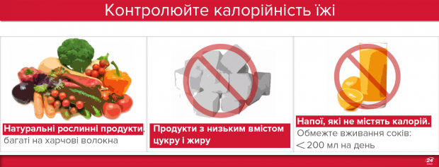
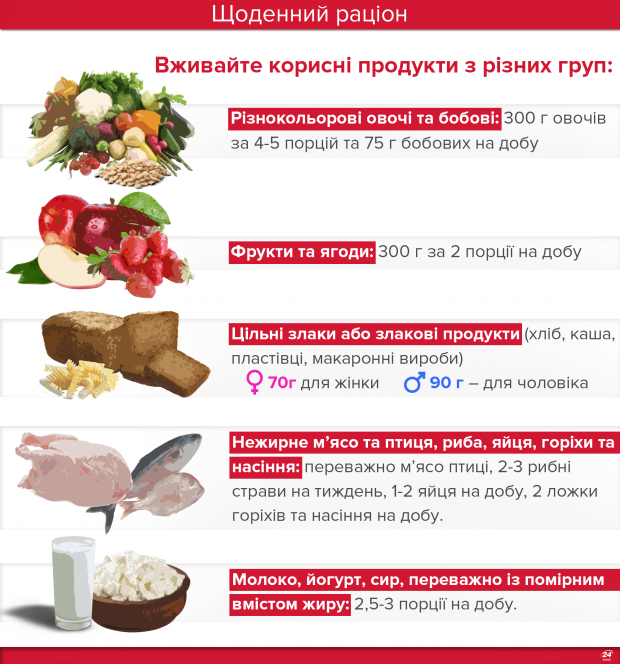
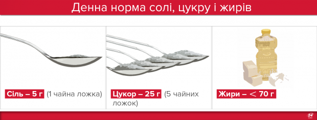

Правильное питание: меню на каждый день для вашего здоровья
Правильное питание – одно из условий долголетия и здоровой жизни. Ведь большинство болезней связаны с тем, что мы едим. Соблюдая простые правила здорового питания, вы будете чувствовать себя значительно лучше.
Предлагаем посмотреть полезную инфографику о здоровом питании, разработанную на основе рекомендаций Министерства здравоохранения Украины.
Как отметила и.о. министра здравоохранения Уляна Супрун, человек гораздо больше рискует получить различные воспаления, хронические болезни и даже рак, если он неправильно питается, в частности, если в его ежедневном рационе много трансжиров. Примите во внимание эти простые советы и приучите себя к правильному питанию. Результат вам понравится!
5 групп продуктов, которые должны быть в вашем рационе:
1. Разноцветные овощи, а также бобовые: 300 г овощей за 4-5 порций и 75 г бобовых в сутки.
2. Фрукты и ягоды: 300 г за 2 порции в день.
3. Цельные злаки или злаковые продукты, которые сохраняют в своем составе максимальное количество пищевых волокон (хлеб, каша, хлопья, макаронные изделия): 70 г цельных злаков для женщины и 90 г – для мужчины.
4. Нежирное мясо и птица, рыба, яйца, орехи и семена: в основном мясо птицы, 2-3 рыбных блюда в неделю, 1-2 яйца в сутки, 2 ложки орехов и семян в сутки.
5. Молоко, йогурт, сыр, преимущественно с умеренным содержанием жира, или их альтернатива: низкой и умеренной жирности, 2,5-3 порции в сутки.
Ограничте потребление соли, сахара и жиров
Рекомендуемая дневная норма соли – 5 г в день (около одной чайной ложки). Норма свободного сахара (как сахарозы, так и фруктозы) – менее 50 г в сутки, но лучше ограничить до 25 г – это 5 чайных ложек или стакан фруктового сока.
Для среднего уровня потребления калорий (2000 ккал/с) общее потребление жиров должно быть менее 70 г в день, а потребление насыщенного жира менее 25 г в день.
